报告插图请下载“报告精简版 SVG”：按约 160 mm 正文宽设计，主标注约 11 pt；详细术语与源码保留在交互图中。每图 INFO 与批末会话关闭分开表示，输出比对结果和最终验收提交分开表示。


主要技术锚点的实现解析
01整网分工：49 Linear，36 PL / 13 PS
每个 Transformer block 的 QKV、fc1、fc2 走 PL，proj 走 PS；12 个 block 加分类 head，共 49 个 Linear。Sparse24 只对 24 个 MLP Linear 使用稀疏模式，12 个 QKV 仍为 Dense。原始 Dense 对照通过同一个 IP 执行 36 次 Dense。
H576 的 MLP 中间维为 576。QKV/fc1 的 M/K/N 为 197/192/576，fc2 为 197/576/192；PS 的 proj 为 197/192/192，head 为 1/192/1000。核本身依据 M/K/N/mode 工作，模型层号与路由由软件固定。
02W8A8 数值：逐行量化，PS 保留浮点后处理
动态激活量化按行取最大绝对值，零行 scale 为 1，其余 scale 为 max(max_abs/127, FP32 最小正规数)。RNE 舍入后限制到 [-127,127]；权重 scale 按输出通道组织。硬件以有符号 INT8 相乘并完整累加为 INT32。
返回 Y 后，PS 按 float(Y) × sx × sw + bias 的既定顺序反量化。QKV 直接写入三个目标布局；量化、缓存同步和反量化属于完整模型计时的一部分。
032:4 数据格式：按 K 四元组、每列独立位置
对每个输出列 n，将 K 方向每 4 个权重分为一组，仅存两个保留值及 p0<p1 的位置。记录 t=g×N+n，W_data 的字节偏移为 2×t+s；位置码 code=p0|(p1<<2)。两个压缩权重与一个 4-bit 位置码分存在 W_data、W_meta，均按 128-bit 字传输。
不同输出列允许不同保留位置，不能给整行或整列广播同一个位置。保留值为零仍保留索引。Sparse 在计算前检查 metadata；Dense 不读取外部 W_meta。格式原文的创建时状态不是当前实现状态，当前能力以 OPT50 源码和接口文档为准。
04共享计算阵列：mode 配置，不切换 bitstream
源码只有一个 model_gemm_top 和一处 selected_x × weights[nn] 乘法表达式，按 32 行、16 列展开。Dense 迭代 K 步，Sparse 迭代 K/2 步；模式选择改变权重地址、slot 和激活字节选择，共用累加器与 MAC 位置。
这是同一电路的运行时参数切换，不是每层动态部分重配置。512 个 MAC 位置也不等于整个分类网络每周期完成一帧；Sparse 算术步数减半不能直接换算成整网两倍加速。
05供数与流水：行缓存、分 bank、结果块交接
X 按 32 行分 bank 并使用 LUTRAM；每行先读一个四元组，再按每列位置选择 INT8。W 使用 16 个 byte bank 的 BRAM。权重先从 DDR 加载至片上并验证，随后计算阶段在 N 微块内复用。DDR 中权重 BO 常驻不表示所有层权重永久驻留 PL。
shared_mac_steps 的流水目标为 II=1。compute_and_pack 与 write_output_blocks 位于 DATAFLOW 中，借助深度 2 的 stream_of_blocks 交接 16 行 slab，上半块另有暂存。该重叠属于单层计算与写回，尚未形成跨模型阶段或跨视频帧的整网流水。
06PS / PL 集成：控制与数据分离，四 BO 生命周期
PS HPM0 经控制 SmartConnect 访问 GEMM 和 observer。GEMM 的 gmem0 读 X，gmem1 共用 W_data/W_meta，gmem2 写 Y；三路 128-bit AXI 经数据 SmartConnect 进入 PS HP0 和 DDR。GEMM/observer 控制基址分别为 0xA0000000/0xA0010000。
唯一 Native owner 持有 CU 及 X、W_data、W_meta、Y 四个持久 BO。两份静态权重 BO 在初始化同步；client 导入 X/Y 的共享 FD，每层只同步有效 X/Y。缓冲含 64-byte 保护偏移并按 4 KiB 页分配。XRT 的 metadata 注册与实际固件装载是不同职责。
07完成证明：Done 之外还要求 Idle 与 AXI 排空
每次执行前核验层序、地址、形状和 mode，写寄存器后完整读回，再进行 START。Done 为读清语义，由状态机锁存观察结果；还必须满足 Idle、Start/auto_restart 清除、observer 无在途事务及返回/AXI 错误为零，才允许结果提交。
BEGIN/END 约束每图恰好 36 次有序 PL 调用。每图先生成并保存比对结果，再由 INFO 完成保护区、静态权重与计数检查；结果保持 pending，下一 BEGIN 要求上一 INFO 已验证。同一会话可处理多图，最多 50 图、900 秒。批次结束才关闭 CPU/Runner、执行 owner STOP 并取得设备关闭证明，然后写入每图 accuracy 和 commit。完成未知时保留现场，不重放请求。
08正确性与性能证据：同模型比较，区分测量边界
完整模型的 CPU 参考和 PL 路径使用同一输入、同一权重，按 FP32 原始位比较 logits，并独立在 1000 类上排名。原始 Dense 和 Sparse24 各有 500 张板测记录，各自比较 500,000 个 logits 且逐位差异为零。两模型权重不同，不要求跨模型 logits 相同。
同调度第 306～500 张的 Runner.run 平均耗时，Dense 为 143.494 ms，Sparse24 为 136.588 ms。该边界包含 PS、36 次 PL 调用及 client 同步，排除初始化、预处理、CPU 参考和完整后验检查。它不是纯 PL 周期、摄像头帧率或长稳吞吐数据；本地图文构建也不产生新的 HLS/RTL/实板验收。
历史图与当前版本的关系
| 历史资料中的内容 | 当前解释 |
|---|---|
| 36 PL / 13 PS、512 MAC、125 MHz、128 bit | 与当前主结构相符，可复用概念层次。 |
| 旧图中的网页 → 板端 agent → 推理服务 | 当前展示网页未接入 Sparse24 实时运行包；不应画成当前必经推理入口。 |
| 旧图中的通用 PL 矩阵引擎 | 需要明确 OPT50、运行时 mode、12D/24S、W_meta 和同一套共享阵列。 |
| 旧图中的固定共享缓冲 | 当前运行包为 X、W_data、W_meta、Y 四 BO；X/Y 由 client 同步。 |
| 历史网页曲线和质量、稳定性记录 | 保留 H576 Dense 的来源；不等同于当前 Sparse24 的 500 张精度和 195 张耗时。 |